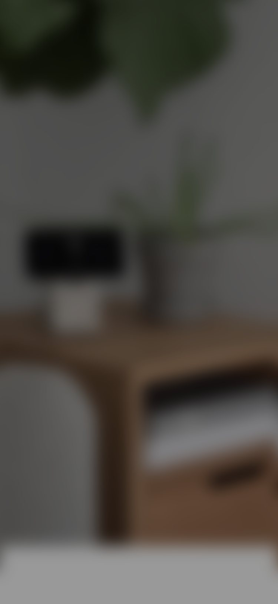
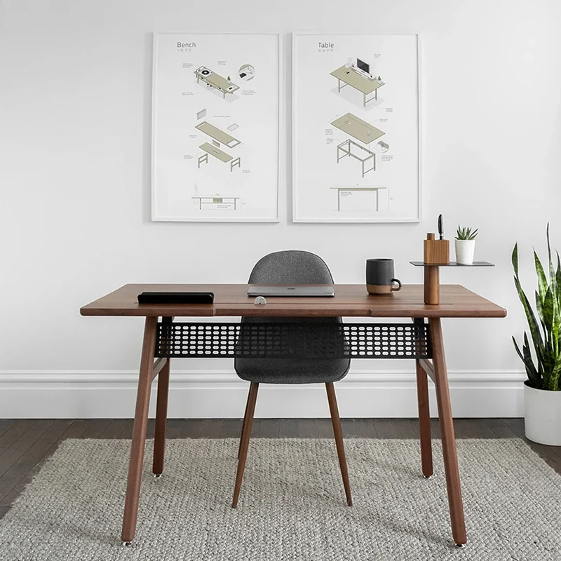
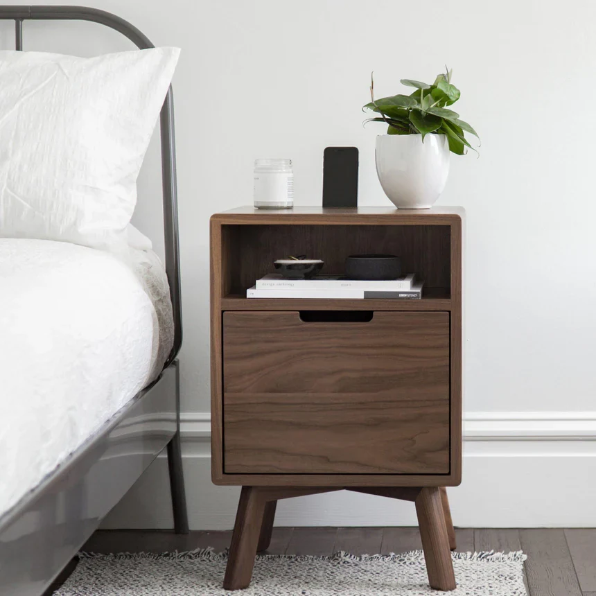
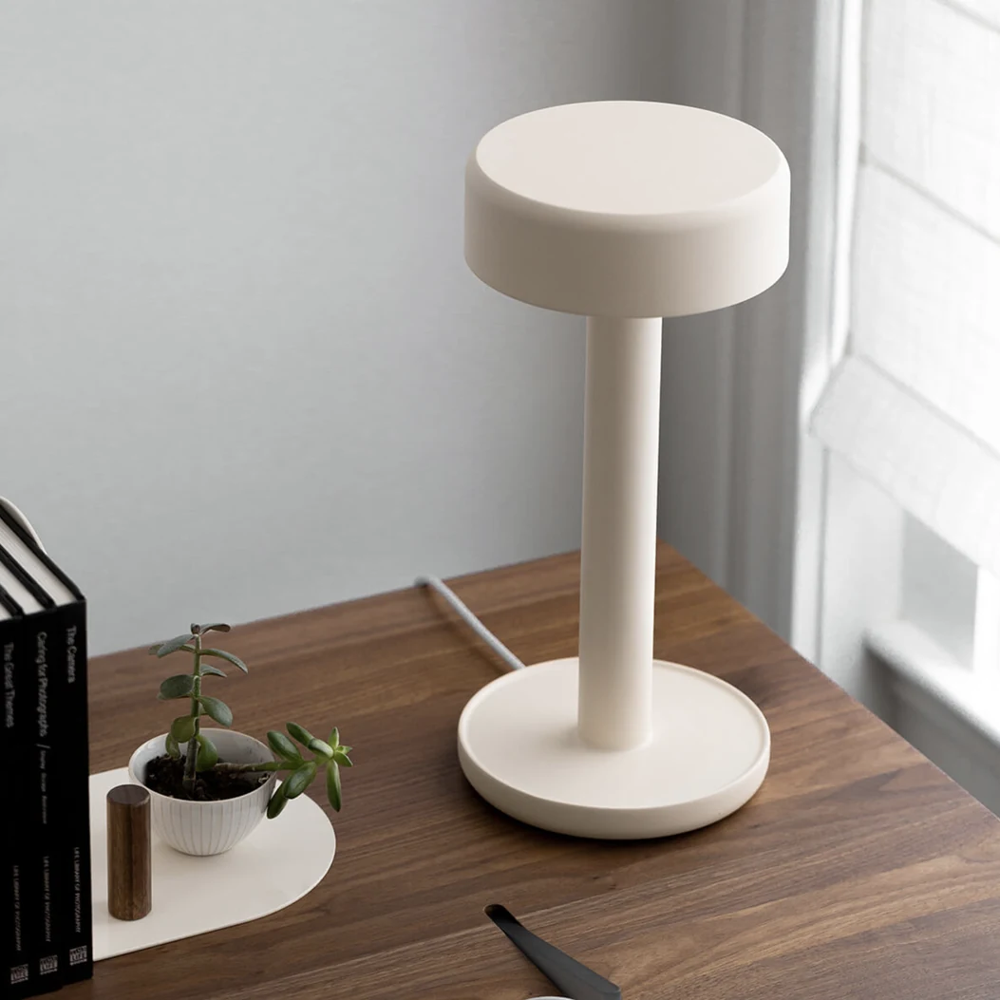
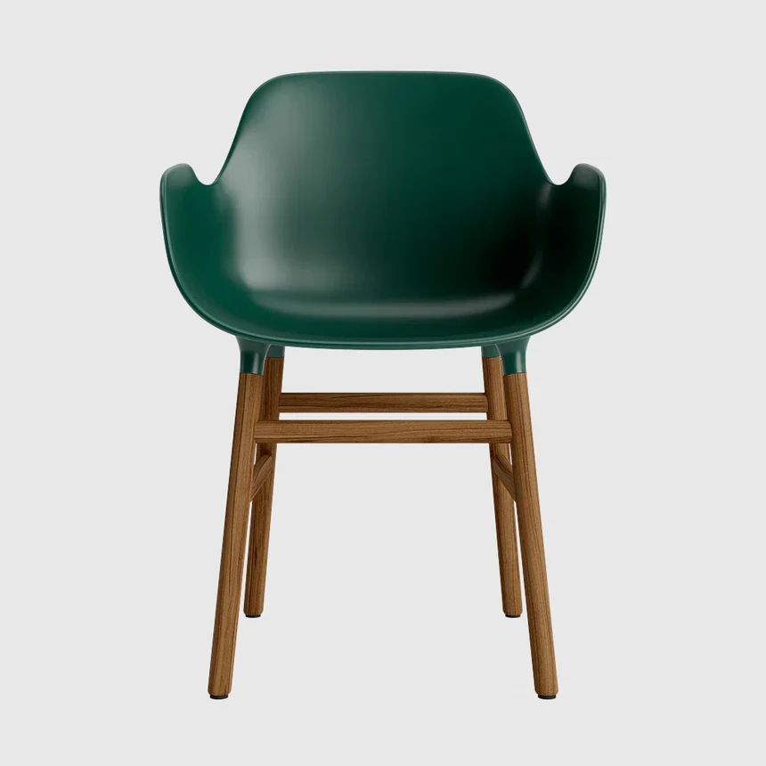
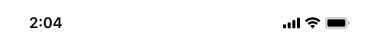

Split Screen H-scroll
FMSS · interactive in-app browser (IAB) prototype — standalone mock








Tap any product in the collection ad to open the split screen: the photo lifts into a swipeable carousel above the in-app browser (IAB). Swipe, drag or two-finger scroll the carousel — each product snaps into place and the page below follows. Drag the browser up for full screen and down to return or dismiss. Learn more opens the store full screen. X or Escape closes.